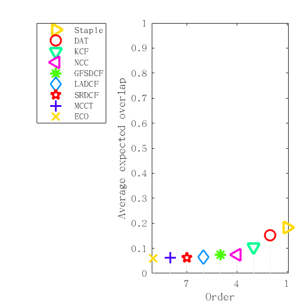

Expected overlap analysis
Experiment realtime

Expected overlap curves for realtime

Expected overlap scores for realtime
Overview
Scores calculated as an average over interval 71 to 303
| all | |
|---|---|
| Staple | 0.1838 |
| DAT | 0.1522 |
| KCF | 0.1049 |
| NCC | 0.0746 |
| GFSDCF | 0.0738 |
| LADCF | 0.0650 |
| SRDCF | 0.0633 |
| MCCT | 0.0624 |
| ECO | 0.0599 |